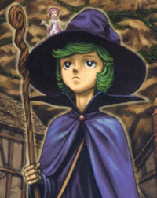
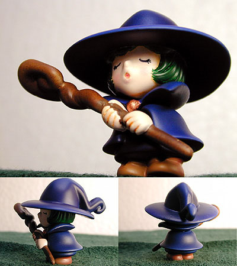
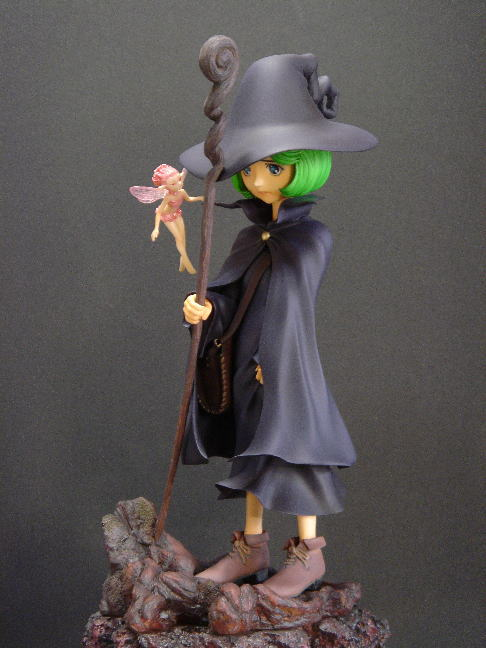
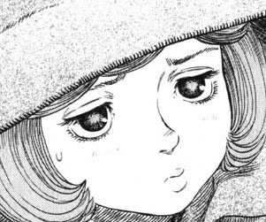

Go to: Schierke - Erica - Evarella (fairy) - Golem (mud creature)
Schierke

good ref picture
- green hair
- not too light, not too dark
- as pictured above is a good green, with some dark
highlights
- purple outfit, including hat
- so the outfit is actually pretty purple, not too dark, and
not too grey. no need to make it bright purple though. just a nice
soft purple should be good
- brown/dark eyes
- i thought her eyes might be bluish or purplish, but
apparently they are just dark brown
- green eyebrows
- brown shoes
- brown bag/strap
- wooden brown staff
- red button
- the button that holds her cloak together, near her neck,
should be red
- light skin tone
- just the standard flesh tone is fine. she's not
dark, and she's not pale either. the ref picture up above is a good color
*note - as you can probably tell, she has a sort of sad/worried look on her face. feel free to paint those sentiments in, but just a subtle touch. i don't want to make her look like a weak character.
Some other pictures...

- in this one above, the cloak is a nice purple, but the hair is a little too
dark green

- in this one above, the cloak is a little too grey, and the hair is too bright
green
EYE DESIGN
So, after looking through the manga again, her eyes aren't really too anime-like at all! They are big, but the design of the eye itself, and the pupil is more on the realistic side. Here are some close ups of Schierke's eyes:


And here's just a random picture to get a feel for her character. These colors below are exaggerated, so DON'T look at this for reference

And that's that!